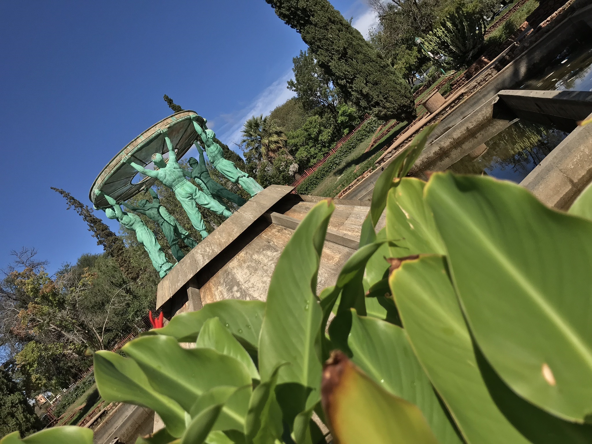

Programs
ELDERLY CHOIR FROM GAASCA SCOOPS SEVEN TROPHIES

The Galeshewe Association for the care of the Aged and Disabled (GAASCA) has proven to be amongst the best elderly choirs in the country after it scooped seven trophies in the recent Lengau Choral Music competition that was held in Bloemfontein.
The Team of 50 members from GAASCA scooped first and third place for Quartet and firsts in Double Quartet, Female, Male and second positions for the mixed choir category. As a cherry on top, GAASCA Choir conductor, Trinity Peme, also took top honours in the Best Conductor category.
WORLD ELDER ABUSE AWARENESS DAY (WEAAD)
On the 15th of June 2019, the GAASCA community voiced out their voices against elder abuse.
“WEAAD aims to provide an opportunity for communities around the world to promote a better understanding of abuse and neglect of older persons by raising awareness of the cultural, social, economic and demographic processes affecting elder abuse and neglect.”
FAMILY DAY CELEBRATION
“Family Day gives family members and their children a chance to celebrate the meaning of being a family and to spend quality time with their loved ones by participating in fun activities together.”
GAASCA community has celebrated this special day with all the loved ones. They did many fun activities for the elders.